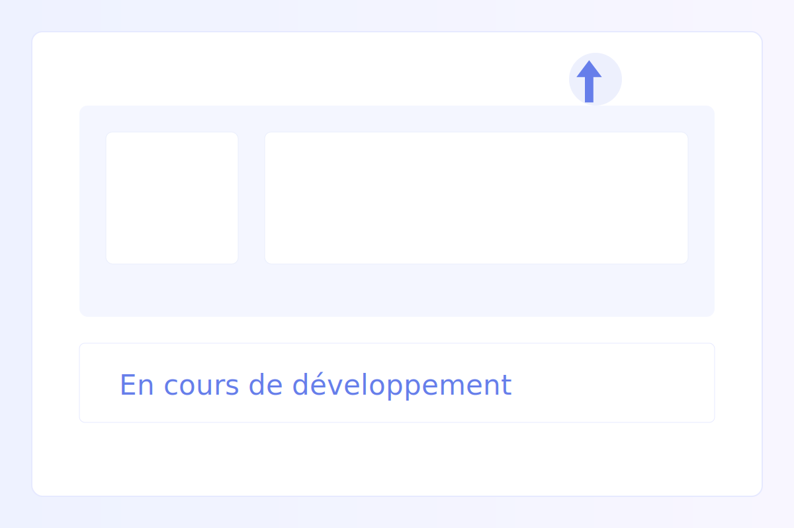

CRÉATION SITE WEB
Web Development

Description
Un projet personnel de création d'un site web moderne et fonctionnel. Ce projet m'a permis de mettre en pratique mes connaissances en HTML, CSS et potentiellement JavaScript pour créer une interface utilisateur attractive et responsive.
Technologies utilisées
- HTML 5
- CSS 3
- JavaScript (optionnel)
Objectifs atteints
- Maîtriser les fondamentaux du développement web
- Créer une interface responsif et accessible
- Améliorer mes compétences en design
Compétences développées
- Structuration HTML sémantique
- Mise en page avec CSS flexbox et grid
- Design responsive et mobile-first